<!doctype html>
<html lang="en">
<head>
<meta charset="utf-8">
<meta name="viewport" content="width=device-width, initial-scale=1">
<title>mini-coder · UX walk 2026-09-24</title>
<style>
  :root {
    --bg: #16181d; --panel: #1c1f27; --panel2: #22262f; --line: #2f3542;
    --fg: #c8d3f5; --muted: #828bb8; --dim: #636da6;
    --blue: #82aaff; --cyan: #65bcff; --green: #c3e88d; --yellow: #ffc777;
    --orange: #ff966c; --red: #ff757f; --purple: #c099ff;
    --mono: ui-monospace, "JetBrains Mono", "DejaVu Sans Mono", Menlo, Consolas, monospace;
  }
  * { box-sizing: border-box; }
  html, body { margin: 0; height: 100%; }
  body {
    background: var(--bg); color: var(--fg);
    font: 15px/1.5 -apple-system, "Segoe UI", Inter, system-ui, sans-serif;
    overflow: hidden;
  }
  header#bar {
    position: fixed; inset: 0 0 auto 0; height: 42px; z-index: 30;
    display: flex; align-items: center; gap: 10px; padding: 0 14px;
    background: #12141a; border-bottom: 1px solid var(--line);
    font-family: var(--mono); font-size: 12.5px; color: var(--muted);
  }
  header#bar .brand { color: var(--blue); }
  header#bar .spacer { flex: 1; }
  header#bar button {
    font: inherit; color: var(--fg); background: var(--panel2);
    border: 1px solid var(--line); border-radius: 6px; padding: 3px 10px; cursor: pointer;
  }
  header#bar button:hover { background: #2b3040; border-color: #3d4557; }
  #counter { min-width: 62px; text-align: right; }
  nav#toc {
    position: fixed; top: 42px; bottom: 0; right: 0; width: 330px; z-index: 25;
    background: #14161c; border-left: 1px solid var(--line); overflow: auto;
    padding: 10px 8px 30px; transform: translateX(100%); transition: transform .16s ease;
    font-family: var(--mono); font-size: 12.5px;
  }
  nav#toc.open { transform: none; }
  nav#toc h4 { margin: 12px 8px 6px; color: var(--dim); font-weight: 600; letter-spacing: .06em; text-transform: uppercase; font-size: 10.5px; }
  nav#toc a { display: block; padding: 3px 8px; color: var(--fg); text-decoration: none; border-radius: 5px;
              white-space: nowrap; overflow: hidden; text-overflow: ellipsis; }
  nav#toc a:hover { background: var(--panel2); }
  nav#toc a.here { background: #2b3040; color: var(--blue); }
  nav#toc a .n { color: var(--dim); display: inline-block; width: 22px; }
  main#deck { position: fixed; inset: 42px 0 0 0; }
  section.slide {
    display: none; position: absolute; inset: 0; overflow: auto;
    padding: 26px 34px 60px;
  }
  section.slide.active { display: block; }
  .kicker { font-family: var(--mono); font-size: 11.5px; letter-spacing: .14em;
            text-transform: uppercase; color: var(--dim); }
  h1 { font-size: 34px; line-height: 1.15; margin: 4px 0 6px; }
  h1.big { font-size: 44px; }
  h2 { font-size: 25px; margin: 2px 0 14px; }
  h3 { font-size: 15px; margin: 18px 0 6px; color: var(--cyan); font-family: var(--mono); }
  p { margin: 8px 0; max-width: 108ch; }
  p.lead { font-size: 17px; color: #dbe3ff; max-width: 92ch; }
  small, .small { font-size: 12.5px; color: var(--muted); }
  code { font-family: var(--mono); font-size: .92em; background: #232833; border: 1px solid var(--line);
         border-radius: 4px; padding: 1px 4px; color: var(--fg); }
  pre {
    font-family: var(--mono); font-size: 12.3px; line-height: 1.45; white-space: pre-wrap;
    background: #101216; border: 1px solid var(--line); border-left: 3px solid var(--blue);
    border-radius: 6px; padding: 10px 12px; margin: 8px 0; color: #dbe3ff; max-width: 120ch;
  }
  pre.evidence { border-left-color: var(--green); }
  pre.bad { border-left-color: var(--red); }
  ul.tight { margin: 6px 0 6px 18px; padding: 0; }
  ul.tight li { margin: 3px 0; max-width: 110ch; }
  a { color: var(--cyan); }
  .cols { display: grid; gap: 14px; }
  .cols.two { grid-template-columns: 1fr 1fr; }
  .cols.three { grid-template-columns: repeat(3, 1fr); }
  .cols.four { grid-template-columns: repeat(4, 1fr); }
  .cols.align-start { align-items: start; }
  figure.shot { margin: 0; }
  figure.shot a { display: block; }
  figure.shot img {
    display: block; border: 1px solid var(--line); border-radius: 6px; background: #0d0f13;
    max-width: 100%; max-height: 58vh; width: auto; height: auto;
  }
  .cols.three figure.shot img { width: 100%; max-height: 42vh; }
  .cols.four figure.shot img { width: 100%; }
  figure.shot.tall img { max-height: 46vh; width: auto; }
  figure.shot figcaption, .cap { font-family: var(--mono); font-size: 11.4px; color: var(--muted); margin-top: 4px; }
  .card { background: var(--panel); border: 1px solid var(--line); border-radius: 8px; padding: 12px 14px; }
  .card h3 { margin-top: 0; }
  .tag {
    display: inline-block; font-family: var(--mono); font-size: 11px; letter-spacing: .06em;
    text-transform: uppercase; padding: 2px 8px; border-radius: 999px; border: 1px solid;
    vertical-align: middle; margin-left: 8px;
  }
  .tag.major { color: #ffd7d7; border-color: #7a2f36; background: #3a1d21; }
  .tag.minor { color: #ffe6c2; border-color: #7a5a25; background: #3a2f1a; }
  .tag.nit { color: #cdd6f4; border-color: #414a5e; background: #262b36; }
  .tag.contract { color: #d6f5d6; border-color: #2f6b3a; background: #1c3324; }
  .tag.taste { color: #e6dcff; border-color: #4b3f74; background: #2a2440; }
  table.grid { border-collapse: collapse; font-family: var(--mono); font-size: 12.2px; width: 100%; max-width: 150ch; }
  table.grid th { text-align: left; color: var(--dim); font-weight: 600; border-bottom: 1px solid var(--line); padding: 5px 10px 5px 0; }
  table.grid td { border-bottom: 1px solid #23262f; padding: 4px 10px 4px 0; vertical-align: top; }
  table.grid td.n { color: var(--muted); text-align: right; width: 5ch; }
  dl.kv { margin: 8px 0; font-size: 14px; }
  dl.kv dt { font-family: var(--mono); font-size: 11.5px; text-transform: uppercase; letter-spacing: .08em;
             color: var(--dim); margin-top: 10px; }
  dl.kv dd { margin: 2px 0 0; max-width: 118ch; }
  .stat { font-family: var(--mono); }
  .stat b { color: var(--blue); font-size: 22px; display: block; }
  .stat span { color: var(--muted); font-size: 11.5px; text-transform: uppercase; letter-spacing: .08em; }
  .note { border-left: 3px solid var(--yellow); background: #24211a; padding: 9px 12px; border-radius: 6px;
          font-size: 13.6px; max-width: 115ch; }
  .callout { border-left: 3px solid var(--red); background: #2a1d20; padding: 9px 12px; border-radius: 6px;
             font-size: 13.6px; max-width: 115ch; }
  .artifacts { font-family: var(--mono); font-size: 12px; color: var(--muted); margin: 6px 0 0; }
  .artifacts a { color: var(--cyan); text-decoration: none; }
  .artifacts a:hover { text-decoration: underline; }
  footer#foot {
    position: fixed; inset: auto 0 0 0; height: 24px; z-index: 30; display: flex; gap: 14px;
    align-items: center; padding: 0 14px; background: #12141a; border-top: 1px solid var(--line);
    font-family: var(--mono); font-size: 11px; color: var(--dim);
  }
  main#deck { inset: 42px 0 24px 0; }
</style>
</head>
<body>
<header id="bar">
  <span class="brand">mini-coder · ux-walk-20260924</span>
  <span class="spacer"></span>
  <span id="counter"></span>
  <button id="tocbtn" title="table of contents (t)">toc</button>
  <button id="prev" title="previous (←)">‹</button>
  <button id="next" title="next (→)">›</button>
</header>
<nav id="toc"></nav>
<main id="deck">

<section class="slide" data-group="Overview" data-title="Cover">
  <div class="kicker">ux walk · 2026-09-24 · observation only</div>
  <h1 class="big">mini-coder, driven by hand</h1>
  <p class="lead">Every reachable state of the TUI, walked at nine geometries, paused, cancelled,
  resized mid-turn and pushed hostile output, then judged from the screen.</p>
  <div class="cols four" style="margin:18px 0 6px">
    <div class="stat"><b>136</b><span>text captures</span></div>
    <div class="stat"><b>102</b><span>images</span></div>
    <div class="stat"><b>25</b><span>byte-level logs</span></div>
    <div class="stat"><b>13</b><span>sessions</span></div>
  </div>
  <div class="cols two" style="margin-top:10px">
    <div class="card">
      <h3>build under test</h3>
      <p class="small">mini-coder 0.8.0 · <code>7841cb1</code> · <code>opencode-go/deepseek-v4.1-flash</code>
      at effort <code>medium</code> · config untouched, no flags, no environment variables changed.</p>
      <h3>verdict</h3>
      <p class="small">14 findings: <span class="tag major">4 major</span>
      <span class="tag minor">4 minor</span><span class="tag nit">6 nit</span>.
      Five break a contract the project states for itself; the rest are taste calls.</p>
    </div>
    <div class="card">
      <h3>artifacts</h3>
      <p class="small"><code>ux-walk-20260924.md</code> — the written report, one section per finding.</p>
      <p class="artifacts">
        <a href="captures/" target="_blank">captures/</a> · <a href="shots/" target="_blank">shots/</a> ·
        <a href="sessions/" target="_blank">sessions/</a> · *.log<br>
        <a href="../ux-walk-20260924.md" target="_blank">../ux-walk-20260924.md</a>
      </p>
    </div>
  </div>
</section>

<section class="slide" data-group="Overview" data-title="Harness &amp; method">
  <h2>How the walk was produced</h2>
  <div class="cols two align-start">
    <div>
      <dl class="kv">
        <dt>instrument</dt>
        <dd>tmux 3.7c pane inside a kitty window sized in cells to the pane
        (<code>window-size manual</code> + <code>resize-window</code>); status line off so pane height
        equals client height. Geometry re-read for every capture
        (<code>tmux display -p '#{pane_width}x#{pane_height}'</code>) and recorded in the artifact name.
        <br><span class="small">client <code>TERM=xterm-kitty</code>, pane <code>TERM=tmux-256color</code>,
        cell ≈ 9.0 × 22 px, a 100×30 pane grabbed 903×691 px.</span></dd>
        <dt>input</dt>
        <dd><code>send-keys -l</code> for literal text, named keys for
        <code>Enter/Escape/C-c/C-d/BSpace/DC/Tab/…</code>, <code>set-buffer</code> +
        <code>paste-buffer -p</code> for real bracketed pastes. <code>extended-keys on</code> plus
        <code>terminal-features *:extkeys</code> on the client.</dd>
        <dt>record</dt>
        <dd>one <code>script -q -O &lt;log&gt; -c 'node …/cli.ts'</code> per app instance inside the pane —
        that log is the only artifact showing the erase and redraw traffic actually emitted.</dd>
        <dt>judge</dt>
        <dd><code>spectacle -a -b -n</code> per state, <code>identify</code>-checked and looked at;
        text captures are <code>capture-pane -p -e -S -</code>, so scrollback and styling are in them.</dd>
        <dt>cwd</dt>
        <dd><code>ux-walk-20260924/</code>, so <code>sessionsDir</code> (unset) resolved to
        <code>ux-walk-20260924/sessions/</code>. The repo and <code>~/.config/mini-coder</code> were untouched.</dd>
      </dl>
    </div>
    <div>
      <h3>one hazard worth knowing</h3>
      <p class="small">The agent under test has <code>bash</code> and the walk ran inside a tmux pane,
      so a chatty prompt lets the model reach the pane that hosts it. Prompts were kept self-contained
      after one session started with a stray line typed into the running app; that session's captures
      are still valid (the tool runs, pauses and resizes were real), only its log name is off
      (<code>s06-1x1.log</code>, not <code>s07.log</code>).</p>
      <h3>what "background" means here</h3>
      <p class="small">The app ships one dark theme. The palette is TokyoNight <em>moon</em> for
      markdown, fences and diffs, while the chrome — status row, <code> | </code> body markers,
      <code>&gt; </code> echo, <code>[complete · Ns]</code> and the terminal-state lines — is written with
      default foreground and <code>SGR 2</code>. That distinction is what the light-terminal pass
      (and finding 5) is about: not "no light theme", but <em>the one theme not applied everywhere</em>.</p>
      <div class="note">Reasoning: the configured model does emit thinking blocks, but
      <code>thinkingLevelMap.medium = null</code>, so the request carries no thinking level and the dim
      in-flight preview only appears on prompts the model decides to reason about.</div>
    </div>
  </div>
</section>

<section class="slide" data-group="Overview" data-title="Coverage map">
  <h2>What was reached</h2>
  <table class="grid">
    <tr><th>group</th><th>states walked</th><th>artifacts</th><th>slides</th></tr>
    <tr><td>startup · idle · editor</td><td class="n">17</td><td>17 captures · 8 images</td><td>Editor &amp; idle</td></tr>
    <tr><td>command input</td><td class="n">5</td><td>5 captures · 3 images</td><td>Command input</td></tr>
    <tr><td>turn lifecycle</td><td class="n">15</td><td>17 captures · 9 images</td><td>Turn lifecycle</td></tr>
    <tr><td>tool rendering</td><td class="n">12</td><td>10 captures · 10 images</td><td>Tool rendering</td></tr>
    <tr><td>markdown &amp; streaming</td><td class="n">4</td><td>4 captures · 4 images</td><td>Markdown</td></tr>
    <tr><td>geometry (9 sizes + 4 live resizes)</td><td class="n">13</td><td>16 captures · 16 images</td><td>Geometry</td></tr>
    <tr><td>terminal · process · theme</td><td class="n">14</td><td>14 captures · 11 images</td><td>Terminal &amp; process, Light pass</td></tr>
    <tr><td><em>not covered</em></td><td class="n">4</td><td>—</td><td>Not covered</td></tr>
  </table>
  <p class="small" style="margin-top:14px">Counts are states in the report's coverage tables; a state can
  have more than one artifact (before/after, capture + image). Full per-state table:
  <a href="../ux-walk-20260924.md" target="_blank">ux-walk-20260924.md → Coverage</a>.</p>
</section>

<section class="slide" data-group="Tests &amp; artifacts" data-title="Editor &amp; idle">
  <div class="kicker">startup · idle · editor — 17 states, 100×30 unless noted</div>
  <h2>Editor &amp; idle</h2>
  <div class="cols three">
    <figure class="shot"><a href="shots/s02-fresh-idle-100x30-05.png" target="_blank">
      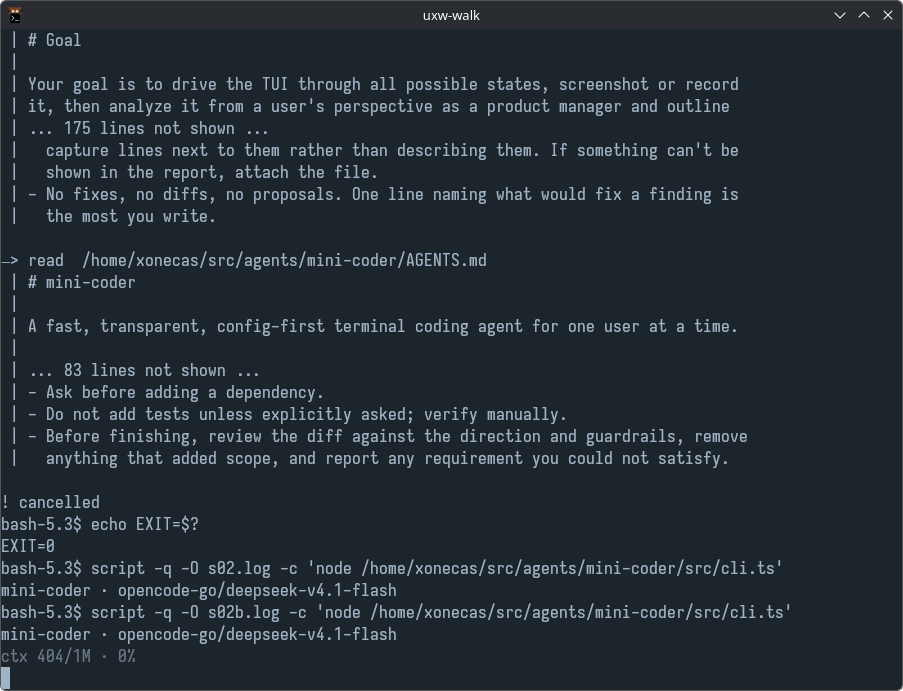</a>
      <figcaption>fresh app · banner, one status row, cursor at col 0<br>
      <a href="captures/s02-fresh-idle-100x30-05.txt" target="_blank">captures/s02-fresh-idle-100x30-05.txt</a></figcaption></figure>
    <figure class="shot"><a href="shots/s02-wrap-100x30-06.png" target="_blank">
      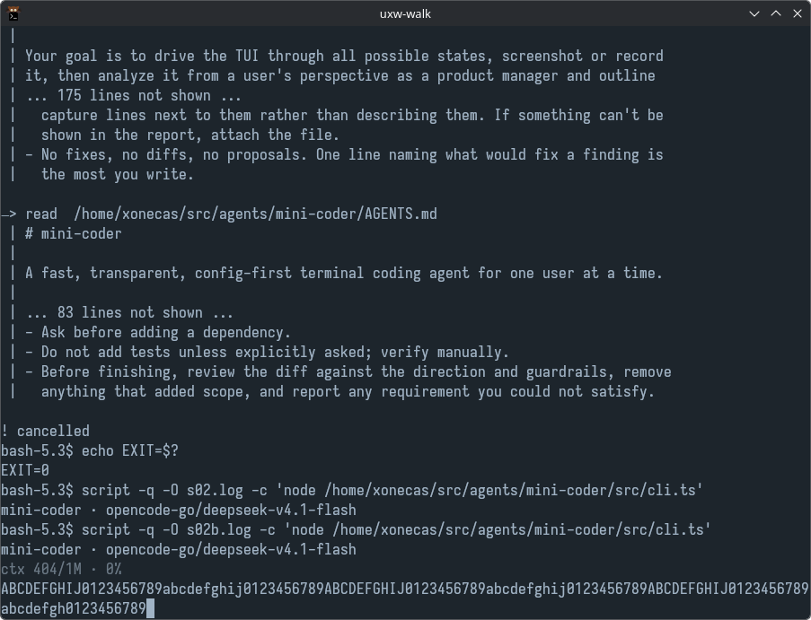</a>
      <figcaption>120-char draft wraps to two rows, no marker<br>
      <a href="captures/s02-wrap-100x30-06.txt" target="_blank">captures/s02-wrap-100x30-06.txt</a> ·
      <a href="captures/s02-wrapboundary-100x30-07.txt" target="_blank">caret at the wrap boundary</a></figcaption></figure>
    <figure class="shot"><a href="shots/s02-3lines-100x30-14.png" target="_blank">
      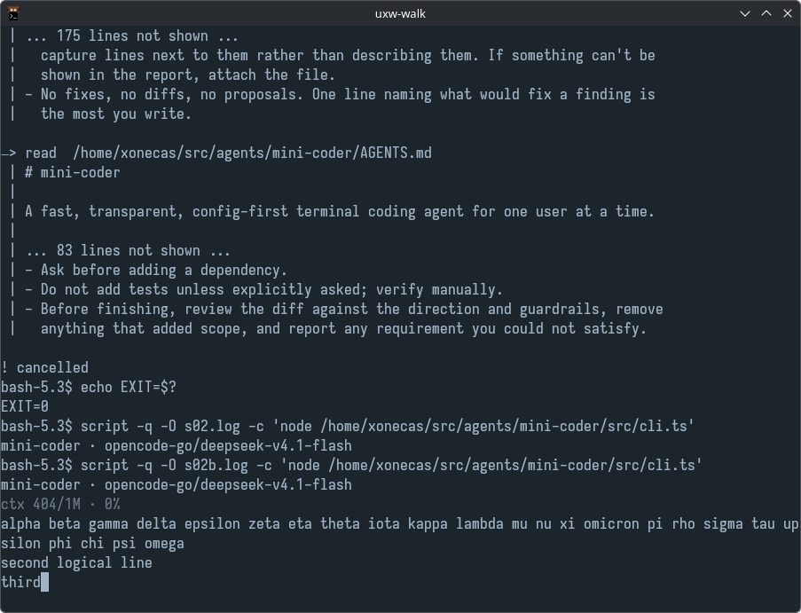</a>
      <figcaption>3 logical lines after <code>Ctrl+J</code>, Home/End/Up/Down<br>
      <a href="captures/s02-3lines-100x30-14.txt" target="_blank">captures/s02-3lines-100x30-14.txt</a></figcaption></figure>
  </div>
  <div class="cols two align-start" style="margin-top:14px">
    <div>
      <h3>what else was pressed</h3>
      <ul class="tight small">
        <li><b>caret</b> — <code>Home</code>/<code>End</code>/<code>Ctrl+A</code>/<code>Ctrl+E</code>/<code>Ctrl+Home</code>/<code>Ctrl+End</code>, one row at a time through a wrapped line; positions verified from <code>#{cursor_x},#{cursor_y}</code> and calibrated at 5/10/100/103/120/500 chars.</li>
        <li><b>joins</b> — <code>BSpace</code> at line start and <code>DC</code> at line end both merge lines and put the caret at the seam.</li>
        <li><b>words</b> — <code>Alt+B</code>, <code>Ctrl+W</code>, <code>Ctrl+Left</code>, <code>Ctrl+Right</code>; results in finding 9.</li>
        <li><b>paste</b> — multi-line + <code>\t</code> and a fence via <code>paste-buffer -p</code>: newlines stay newlines, no accidental submit.</li>
        <li><b>burst</b> — 500 characters in one <code>send-keys -l</code>: nothing lost.</li>
        <li><b>viewport</b> — six lines pasted at 80×5: the editor shows three rows and scrolls with the caret (<code>Ctrl+Home</code> → top three, caret at end → last three).</li>
      </ul>
      <p class="artifacts">
        <a href="captures/s02-calib-100x30-08.txt" target="_blank">calib 10 chars</a> ·
        <a href="captures/s02-calib2-100x30-09.txt" target="_blank">calib 100/103 chars</a> ·
        <a href="captures/s02-calib3-100x30-10.txt" target="_blank">120/239</a> ·
        <a href="captures/s02-burst500-100x30-11.txt" target="_blank">500-char burst</a> ·
        <a href="captures/s02-wordmotions-100x30-17.txt" target="_blank">word motions</a> ·
        <a href="captures/s02-ctrlw-linestart-100x30-16.txt" target="_blank">Ctrl+W at line start</a> ·
        <a href="captures/s02-backspace-join-100x30-19.txt" target="_blank">backspace join</a> ·
        <a href="captures/s02-delete-join-100x30-21.txt" target="_blank">delete join</a> ·
        <a href="captures/s02-tab-noncommand-100x30-22.txt" target="_blank">Tab on a draft</a> ·
        <a href="captures/s02-paste-multiline-100x30-30.txt" target="_blank">paste</a> ·
        <a href="captures/s02-paste-fence-100x30-31.txt" target="_blank">fence paste</a> ·
        <a href="captures/s12-80x5-editor-viewport-03.txt" target="_blank">80×5 viewport</a> ·
        <a href="captures/s12-80x5-editor-top-04.txt" target="_blank">80×5 at top</a>
      </p>
    </div>
    <pre class="evidence">$ tmux display -p '#{cursor_x},#{cursor_y}'   # 120 chars typed
20,29            <- end of the wrapped row
# 20 x Left
98,28            <- lands on the last cell of row 0  (finding 10)
# exactly 100 chars
99,28            <- caret clamped onto the last character

# 80x5, six-line draft
caret at end ->  dd / ee / ff
Ctrl+Home    ->  aa / bb / cc</pre>
  </div>
</section>

<section class="slide" data-group="Tests &amp; artifacts" data-title="Command input">
  <div class="kicker">command input — 5 states</div>
  <h2>Command input</h2>
  <div class="cols three">
    <figure class="shot"><a href="shots/s02-help-100x30-26.png" target="_blank">
      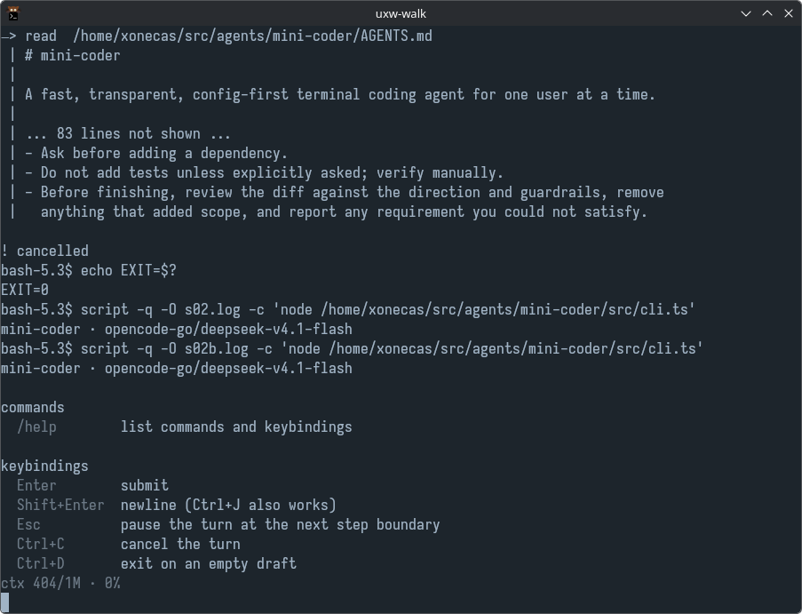</a>
      <figcaption><code>/help</code> · commands + keybindings<br>
      <a href="captures/s02-help-100x30-26.txt" target="_blank">captures/s02-help-100x30-26.txt</a></figcaption></figure>
    <figure class="shot"><a href="shots/s02-help-args-100x30-27.png" target="_blank">
      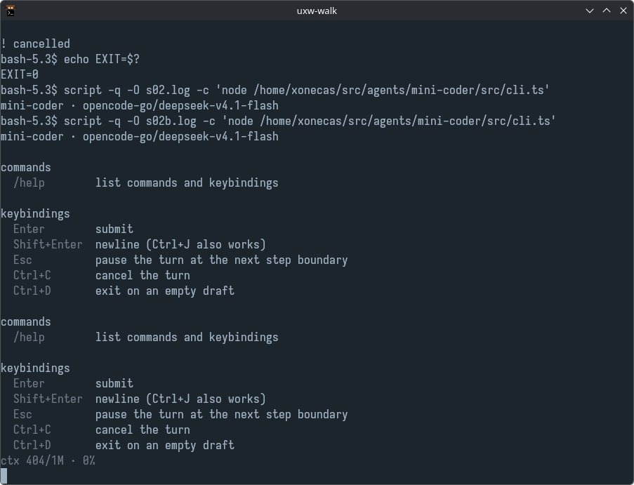</a>
      <figcaption><code>/help now please</code> — args ignored, help printed<br>
      <a href="captures/s02-help-args-100x30-27.txt" target="_blank">captures/s02-help-args-100x30-27.txt</a></figcaption></figure>
    <figure class="shot"><a href="shots/s02-unknown-slash-100x30-28.png" target="_blank">
      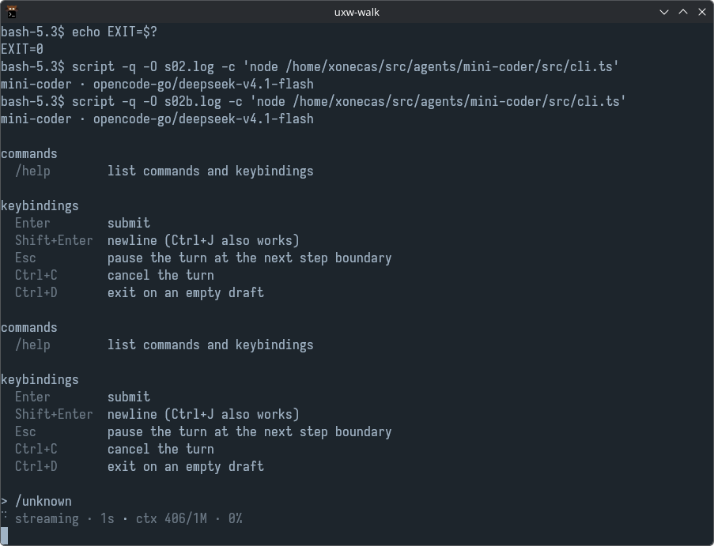</a>
      <figcaption><code>/unknown</code> stays a model message and starts a turn<br>
      <a href="captures/s02-unknown-slash-100x30-28.txt" target="_blank">…-28.txt</a> ·
      <a href="captures/s02-unknown-cancelled-100x30-29.txt" target="_blank">…-29 (cancelled)</a></figcaption></figure>
  </div>
  <div class="cols two align-start" style="margin-top:14px">
    <pre class="evidence">commands
  /help        list commands and keybindings

keybindings
  Enter        submit
  Shift+Enter  newline (Ctrl+J also works)
  Esc          pause the turn at the next step boundary
  Ctrl+C       cancel the turn
  Ctrl+D       exit on an empty draft</pre>
    <div>
      <p class="small">Tab completion works at both <code>/</code> and <code>/h</code> (both complete to
      <code>/help</code>) and a bare <code>/</code> gives no hint; neither is in the list above — finding 12.</p>
      <p class="artifacts">
        <a href="captures/s02-slash-100x30-23.txt" target="_blank">"/" typed</a> ·
        <a href="captures/s02-slash-tab-100x30-24.txt" target="_blank">"/" + Tab</a> ·
        <a href="captures/s02-slashh-tab-100x30-25.txt" target="_blank">"/h" + Tab</a>
      </p>
      <p class="small">Shift+Enter is listed here but does not arrive as a distinct key through tmux —
      finding 4, with the byte probe.</p>
    </div>
  </div>
</section>

<section class="slide" data-group="Tests &amp; artifacts" data-title="Turn lifecycle">
  <div class="kicker">turn lifecycle — 15 states, all at 100×30</div>
  <h2>Turn lifecycle</h2>
  <figure class="shot"><a href="shots/group-lifecycle.png" target="_blank">
    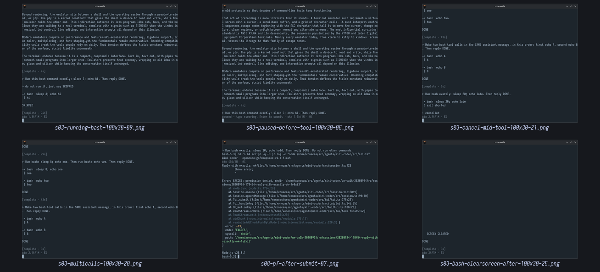</a>
    <figcaption>contact sheet: <code>running bash</code> · <code>paused</code> · cancelled between call and result · two calls in order · persistence failure · a tool result that clears the screen</figcaption></figure>
  <div class="cols two align-start" style="margin-top:12px">
    <div>
      <h3>phase rows, frame by frame</h3>
      <pre class="evidence">30 frames, 80 ms apart, from Enter:
 1  ctx 404/1M · 0%                              <- idle, Enter not yet handled
 2  ⠋ streaming · 0s · ctx 410/1M · 0%           <- already streaming at ~70 ms
...  spinner advances every ~120 ms (2 frames)
25  ctx 677/1M · 0%                              <- idle again, [complete · 1s]
preparing / waiting for provider: never rendered  (finding 2)</pre>
      <h3>paused</h3>
      <pre class="evidence">paused - type steering, Enter to submit · ctx 1.3k/1M · 0%
# Esc while streaming: nothing changes for 1.5 s, then the
# step boundary arrives (a tool call) and the row above appears
# Esc in a turn with no tool calls: dropped, turn completes</pre>
    </div>
    <div>
      <h3>cancel between call and result</h3>
      <pre class="evidence">-> bash  sleep 20; echo late
 ! exit aborted
! cancelled
ctx 2.2k/1M · 0%</pre>
      <p class="artifacts">
        <a href="captures/s03-phases-100x30-01" target="_blank">phase burst</a> ·
        <a href="captures/s03-running-bash-100x30-09.txt" target="_blank">running bash</a> ·
        <a href="captures/s03-paused-before-tool-100x30-06.txt" target="_blank">paused before a tool</a> ·
        <a href="captures/s03-paused-draft-100x30-07.txt" target="_blank">paused with a draft</a> ·
        <a href="captures/s03-steered-100x30-08.txt" target="_blank">steered with text</a> ·
        <a href="captures/s03-paused-tool-100x30-13.txt" target="_blank">empty Enter</a> ·
        <a href="captures/s03-paused-esc-esc-100x30-11.txt" target="_blank">Esc twice</a> ·
        <a href="captures/s03-esc-in-runningtool-100x30-17.txt" target="_blank">Esc in a tool</a> ·
        <a href="captures/s03-paused-after-tool-100x30-18.txt" target="_blank">paused after the tool</a> ·
        <a href="captures/s03-paused2-100x30-05.txt" target="_blank">tool-less turn</a> ·
        <a href="captures/s03-cancel-mid-tool-100x30-21.txt" target="_blank">cancel mid-tool</a> ·
        <a href="captures/s03-multicalls-100x30-20.txt" target="_blank">two calls</a> ·
        <a href="captures/s01-04-cancel-midstream.txt" target="_blank">cancel mid-stream</a> ·
        <a href="captures/s03-complete-100x30-02.txt" target="_blank">complete</a>
      </p>
    </div>
  </div>
</section>

<section class="slide" data-group="Tests &amp; artifacts" data-title="Tool rendering">
  <div class="kicker">tool rendering — 12 states, all at 100×30</div>
  <h2>Tool rendering</h2>
  <figure class="shot"><a href="shots/group-tools.png" target="_blank">
    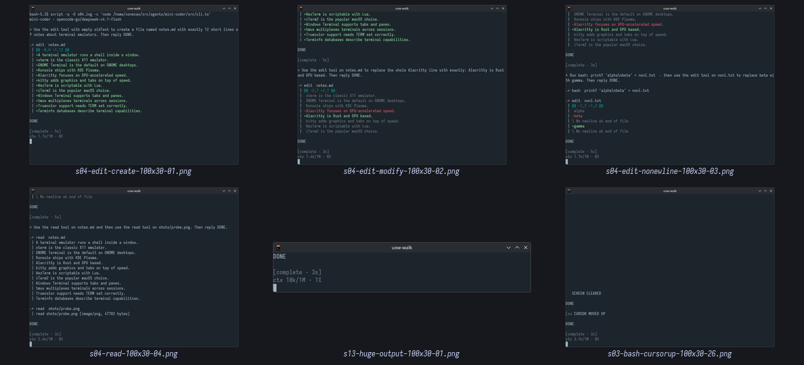</a>
    <figcaption>contact sheet: <code>edit</code> create · <code>edit</code> modify · <code>edit</code> no-newline-at-EOF · <code>read</code> text + image · elided 5000-line output · <code>ESC[5A</code> in a tool result</figcaption></figure>
  <div class="cols two align-start" style="margin-top:12px">
    <div>
      <h3>bash</h3>
      <pre class="evidence">-> bash  seq 1 5000            (display elision, head 4 / tail 4)
 | 1
 | 2
 | 3
 | 4
 | ... 3417 lines not shown ...
 | 4997
 | 4998
 | 4999
 | 5000

-> bash  echo before; exit 3
 | before
 ! exit 3                     (only on error; plain, not red)
ctx 10k/1M · 1%</pre>
      <h3>edit</h3>
      <pre class="evidence">-> edit  notes.md
 | @@ -2,7 +2,7 @@              cyan
 |  xterm is the classic …      dim context
 | -Alacritty focuses on …      red
 | +Alacritty is Rust and …     green</pre>
    </div>
    <div>
      <pre class="evidence">-> edit  nonl.txt
 | @@ -1,2 +1,2 @@
 |  alpha
 | -beta
 | \ No newline at end of file   dim
 | +gamma
 | \ No newline at end of file

-> read  shots/probe.png
 | read shots/probe.png (image/png, 47782 bytes)
-> read  /usr/bin/ls
 ! read failed: /usr/bin/ls is binary; use bash (file, xxd)</pre>
      <p class="artifacts">
        <a href="captures/s03-bash-exit3-100x30-22.txt" target="_blank">exit 3</a> ·
        <a href="captures/s13-huge-output-100x30-01.txt" target="_blank">huge output</a> ·
        <a href="captures/s03-bash-hostile-100x30-23.txt" target="_blank">tabs / \r / ANSI / bell</a> ·
        <a href="captures/s03-bash-clearscreen-after-100x30-25.txt" target="_blank">ESC[2J</a> ·
        <a href="captures/s03-bash-cursorup-100x30-26.txt" target="_blank">ESC[5A</a> ·
        <a href="captures/s04-edit-create-100x30-01.txt" target="_blank">edit create</a> ·
        <a href="captures/s04-edit-modify-100x30-02.txt" target="_blank">edit modify</a> ·
        <a href="captures/s04-edit-nonewline-100x30-03.txt" target="_blank">no newline at EOF</a> ·
        <a href="captures/s04-read-100x30-04.txt" target="_blank">read text + image</a> ·
        <a href="captures/s04-read-elide-binary-100x30-05.txt" target="_blank">read elided + binary</a> ·
        <a href="captures/s01-02.txt" target="_blank">multi-line call collapsed</a>
      </p>
      <div class="callout">The two rows above that are highlighted red in the report are one finding:
      tool output is written straight to the terminal, so <code>ESC[5A</code> moved the cursor into
      already-committed scrollback and rewrote it. Finding 1.</div>
    </div>
  </div>
</section>

<section class="slide" data-group="Tests &amp; artifacts" data-title="Markdown &amp; streaming">
  <div class="kicker">markdown &amp; streaming — 4 states, 100×30</div>
  <h2>Markdown &amp; streaming</h2>
  <div class="cols three">
    <figure class="shot"><a href="shots/s05-md-100x30-01.png" target="_blank">
      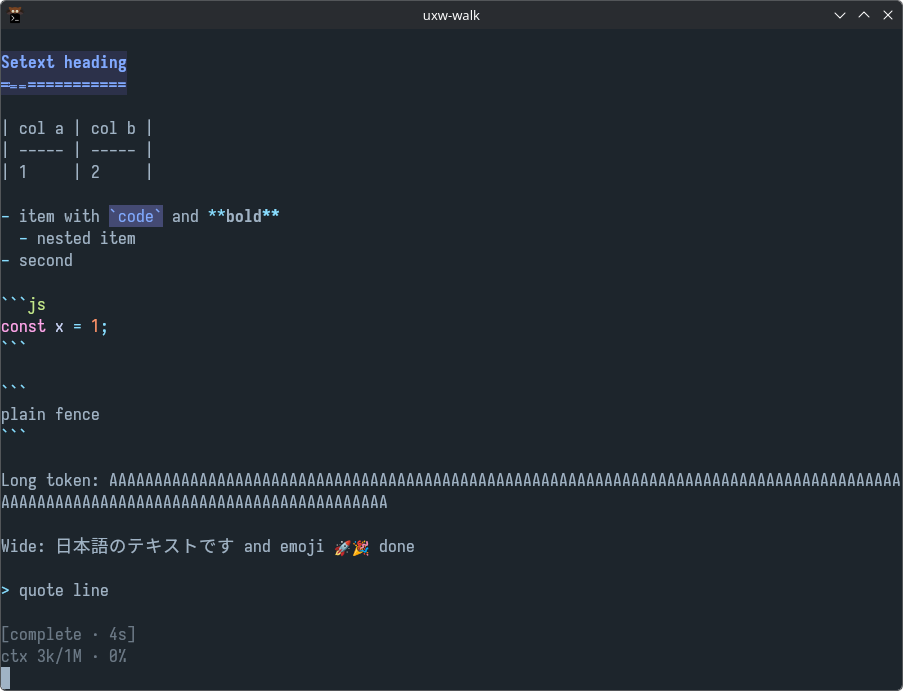</a>
      <figcaption>setext heading, table, nested list, inline code, js + plain fence, 108-char token, wide chars, emoji, quote<br>
      <a href="captures/s05-md-100x30-01.txt" target="_blank">captures/s05-md-100x30-01.txt</a></figcaption></figure>
    <figure class="shot"><a href="shots/s05-reasoning-preview-100x30-03.png" target="_blank">
      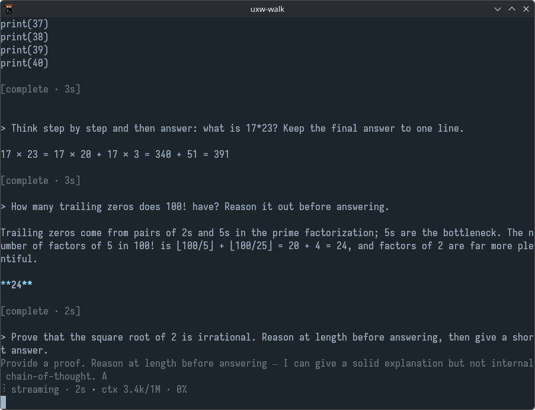</a>
      <figcaption>dimmed reasoning tail behind the in-flight preview; the text preview replaces it when the answer starts<br>
      <a href="captures/s05-reasoning-preview-100x30-03.txt" target="_blank">captures/s05-reasoning-preview-100x30-03.txt</a></figcaption></figure>
    <figure class="shot"><a href="shots/s05-unclosed-fence-100x30-02.png" target="_blank">
      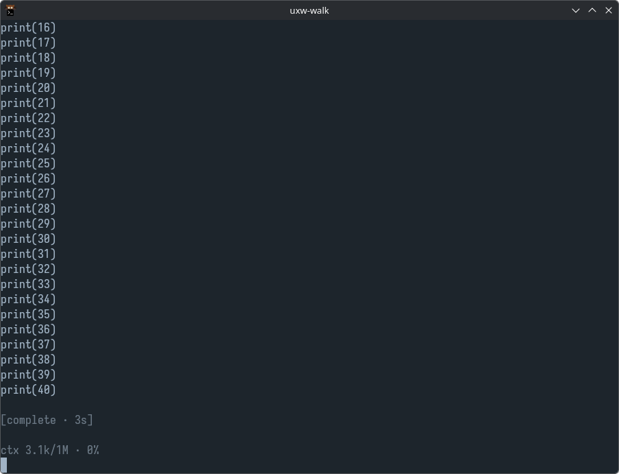</a>
      <figcaption>fence never closed by the model: held, then released at turn end (body plain — <code>python</code> is not a carried grammar, finding 13)<br>
      <a href="captures/s05-unclosed-fence-100x30-02.txt" target="_blank">…-02.txt</a></figcaption></figure>
  </div>
  <div class="cols two align-start" style="margin-top:12px">
    <pre class="evidence">paragraph spacing: one blank row — checked with a script over
the captures; every capture whose reply is short or whose panel
is tall shows single blanks:
  16 |ALPHA
  17 |
  18 |BETA
  19 |
  20 |[complete · 1s]

the same check on a streamed reply at 80×5 (live region fills
the pane) shows two blanks in a row — finding 7.</pre>
    <div>
      <p class="small">Wide characters and emoji count two cells in the wrap (<code>日本語のテキストです</code>,
      🚀🎉) and a 108-character token breaks mid-token with the continuation row carrying no marker.</p>
      <p class="artifacts">
        <a href="captures/s11-blankline-100x30-01.txt" target="_blank">blank-line check</a> ·
        <a href="captures/s11-paragraphs-100x30-02.txt" target="_blank">four paragraphs</a> ·
        <a href="captures/s11-80x5-blankrows-03.txt" target="_blank">80×5, short reply</a> ·
        <a href="captures/s11-80x5-doubleblank-04.txt" target="_blank">80×5, double blank</a> ·
        <a href="../ux-walk-20260924/check-integrity.py" target="_blank">check-integrity.py</a>
      </p>
    </div>
  </div>
</section>

<section class="slide" data-group="Tests &amp; artifacts" data-title="Geometry sweep">
  <div class="kicker">geometry — 9 sizes, fresh app each time, plus 4 live resizes</div>
  <h2>Geometry sweep</h2>
  <figure class="shot"><a href="shots/group-geometry-idle.png" target="_blank">
    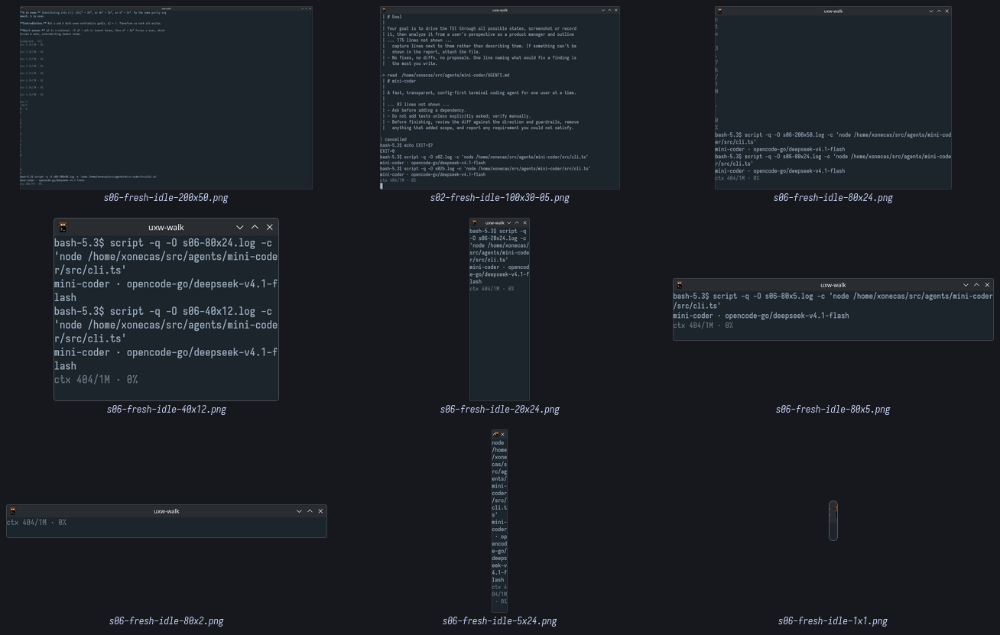</a>
    <figcaption>200×50 · 100×30 · 80×24 · 40×12 · 20×24 · 80×5 · 80×2 · 5×24 · 1×1 — one window grab per size, geometry read back from tmux and recorded in each file name</figcaption></figure>
  <div class="cols three" style="margin-top:12px">
    <figure class="shot"><a href="shots/s07-stream-40x12-02.png" target="_blank">
      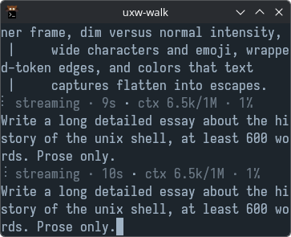</a>
      <figcaption>resize mid-stream 100×30 → 40×12; the stream keeps going<br>
      <a href="captures/s07-stream-40x12-02.txt" target="_blank">…-02</a> ·
      <a href="captures/s07-stream-back-100x30-03.txt" target="_blank">back to 100×30</a></figcaption></figure>
    <figure class="shot"><a href="shots/s07-midtool-40x12-08.png" target="_blank">
      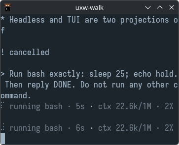</a>
      <figcaption>resize mid-tool (<code>sleep 25</code> in flight)<br>
      <a href="captures/s07-midtool-40x12-08.txt" target="_blank">…-08</a> ·
      <a href="captures/s07-midtool-back-100x30-09.txt" target="_blank">back</a></figcaption></figure>
    <figure class="shot"><a href="shots/s07-paused-60x18-11.png" target="_blank">
      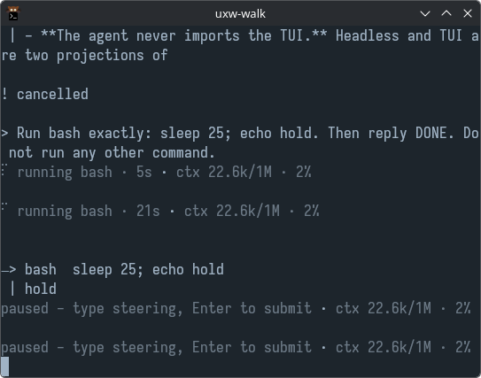</a>
      <figcaption>resize while paused 100×30 → 60×18; the paused row re-renders<br>
      <a href="captures/s07-paused-60x18-11.txt" target="_blank">…-11</a></figcaption></figure>
  </div>
  <div class="cols two align-start" style="margin-top:12px">
    <pre class="bad">resize, minimal reproducer — fresh app, one row smaller:

before  100x30 : [ 'ctx 404/1M · 0%' ]
after   100x29 : [ 'ctx 404/1M · 0%', 'ctx 404/1M · 0%' ]
   tail: 'mini-coder · opencode-go/deepseek-v4.1-flash',
         'ctx 404/1M · 0%', '', 'ctx 404/1M · 0%', '', ''

every resize adds one — nine resizes produced nine stacked rows,
and after growing the pane the live region is not pinned to the
bottom any more (finding 3).</pre>
    <div>
      <p class="small">Extremes: at 5×24 the status row wraps to three rows
      (<code>ctx 3</code> / <code>.7k/1</code> / <code>M · 0</code> / <code>%</code>); at 80×2 only the status
      and one editor row fit; at 1×1 the window is 12×53 px and nothing legible survives. Committed
      scrollback reflows to the new width without re-rendering.</p>
      <p class="artifacts">
        <a href="captures/s06-fresh-idle-200x50.txt" target="_blank">200×50</a> ·
        <a href="captures/s02-fresh-idle-100x30-05.txt" target="_blank">100×30</a> ·
        <a href="captures/s06-fresh-idle-80x24.txt" target="_blank">80×24</a> ·
        <a href="captures/s06-fresh-idle-40x12.txt" target="_blank">40×12</a> ·
        <a href="captures/s06-fresh-idle-20x24.txt" target="_blank">20×24</a> ·
        <a href="captures/s06-fresh-idle-80x5.txt" target="_blank">80×5</a> ·
        <a href="captures/s06-fresh-idle-80x2.txt" target="_blank">80×2</a> ·
        <a href="captures/s06-fresh-idle-5x24.txt" target="_blank">5×24</a> ·
        <a href="captures/s06-fresh-idle-1x1.txt" target="_blank">1×1</a> ·
        <a href="captures/s12-resize-clean-before-01.txt" target="_blank">ghost before</a> ·
        <a href="captures/s12-resize-clean-after-02.txt" target="_blank">ghost after</a> ·
        <a href="captures/s06-resize-after-100x28-03.txt" target="_blank">three rows</a> ·
        <a href="captures/s09-80x5-streaming-02.txt" target="_blank">80×5 in-flight clip</a>
      </p>
    </div>
  </div>
</section>

<section class="slide" data-group="Tests &amp; artifacts" data-title="Terminal &amp; process">
  <div class="kicker">terminal · process — exit paths, signals, keyboard modes</div>
  <h2>Terminal &amp; process</h2>
  <figure class="shot"><a href="shots/group-terminal.png" target="_blank">
    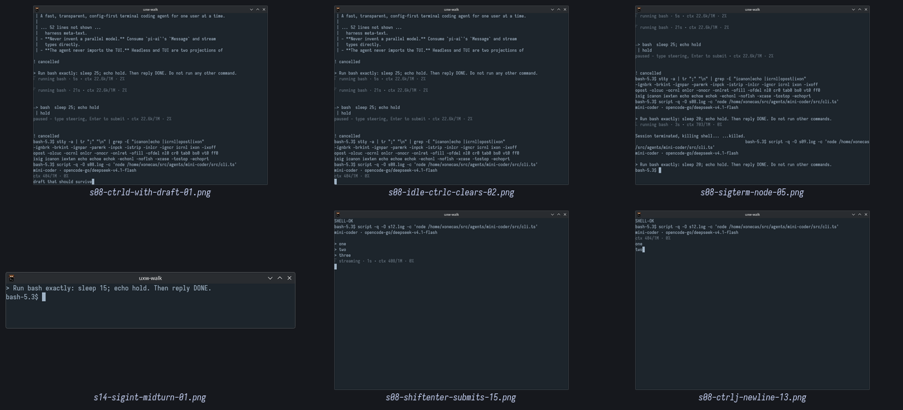</a>
    <figcaption>Ctrl+D with a draft (ignored) · Ctrl+C at idle (draft cleared) · SIGTERM mid-turn · SIGINT mid-turn · Shift+Enter (submits) · Ctrl+J (newline)</figcaption></figure>
  <div class="cols two align-start" style="margin-top:12px">
    <div>
      <h3>clean exits leave the terminal clean</h3>
      <pre class="evidence">tail of the byte log, Ctrl+D on an empty draft:
  ! cancelled
  ctx 22.6k/1M · 2%
  ␍␊␛[1A␍␛[J␛[<u␛[?2004l          <- region cleared, kitty flag popped,
                                     bracketed paste off
  Script done … [COMMAND_EXIT_CODE="0"]

same tail for SIGTERM and SIGINT delivered straight to the node
process mid-turn; exit code 0 for all three.
no ␛[?25l anywhere in any log: the cursor is never hidden.

stty -a in the pane afterwards: icanon iexten echo icrnl ixon</pre>
      <h3>which keys actually arrive</h3>
      <pre class="bad">probe (probe-keys.mjs) with the kitty flags requested:
  extended-keys off   S-Enter -> "\r"
  extended-keys on    S-Enter -> "\r"      (also with extkeys)
  Ctrl+J              -> "\n"               (works)
  injected CSI-u      -> newline inserted   (app can handle it)</pre>
    </div>
    <div>
      <h3>exit paths, one by one</h3>
      <ul class="tight small">
        <li><code>Ctrl+D</code> on an empty draft exits with code 0; the shell prompt comes back at once.</li>
        <li><code>Ctrl+D</code> with a draft does nothing at all — no accidental exit.</li>
        <li><code>Ctrl+C</code> at idle with a draft clears it silently (finding 14).</li>
        <li><code>SIGTERM</code>/<code>SIGINT</code> mid-turn: the tool's process group dies, the live
        region is erased, modes are released, exit code 0, no stray <code>sleep</code> left behind.</li>
        <li>Killing the wrapper <code>script</code> instead leaves the modes on — but that is the
        harness, not the app; the app's own crash path does the same and is finding 2.</li>
      </ul>
      <p class="artifacts">
        <a href="captures/s01-06-exit-ctrld.txt" target="_blank">exit Ctrl+D</a> ·
        <a href="captures/s01-07-exitcode.txt" target="_blank">exit code</a> ·
        <a href="captures/s08-ctrld-with-draft-01.txt" target="_blank">Ctrl+D with a draft</a> ·
        <a href="captures/s08-idle-ctrlc-clears-02.txt" target="_blank">Ctrl+C at idle</a> ·
        <a href="captures/s08-sigterm-node-05.txt" target="_blank">SIGTERM</a> ·
        <a href="captures/s14-sigint-midturn-01.txt" target="_blank">SIGINT</a> ·
        <a href="captures/s07-tty-after-exit-01.txt" target="_blank">stty after exit</a> ·
        <a href="captures/s08-shiftenter-on-12.txt" target="_blank">Shift+Enter</a> ·
        <a href="captures/s08-extkeys-off-bytes-11.txt" target="_blank">extended keys off</a> ·
        <a href="captures/s08-ctrlj-newline-13.txt" target="_blank">Ctrl+J</a> ·
        <a href="captures/s08-csiu-shiftenter-14.txt" target="_blank">CSI-u fed as bytes</a> ·
        <a href="probe-keys.mjs" target="_blank">probe-keys.mjs</a>
      </p>
    </div>
  </div>
</section>

<section class="slide" data-group="Tests &amp; artifacts" data-title="Light-terminal pass">
  <div class="kicker">theme pass — the same states on a terminal that is not dark</div>
  <h2>Light-terminal pass</h2>
  <p class="lead">The point of these three captures is not "there is no light theme" — mini-coder ships
  one dark theme. It is that the theme is applied to some rows and not to others, so on a terminal whose
  background is not the theme's the halves disagree.</p>
  <div class="cols two">
    <figure class="shot"><a href="shots/s10-light-tools-100x30-02.png" target="_blank">
      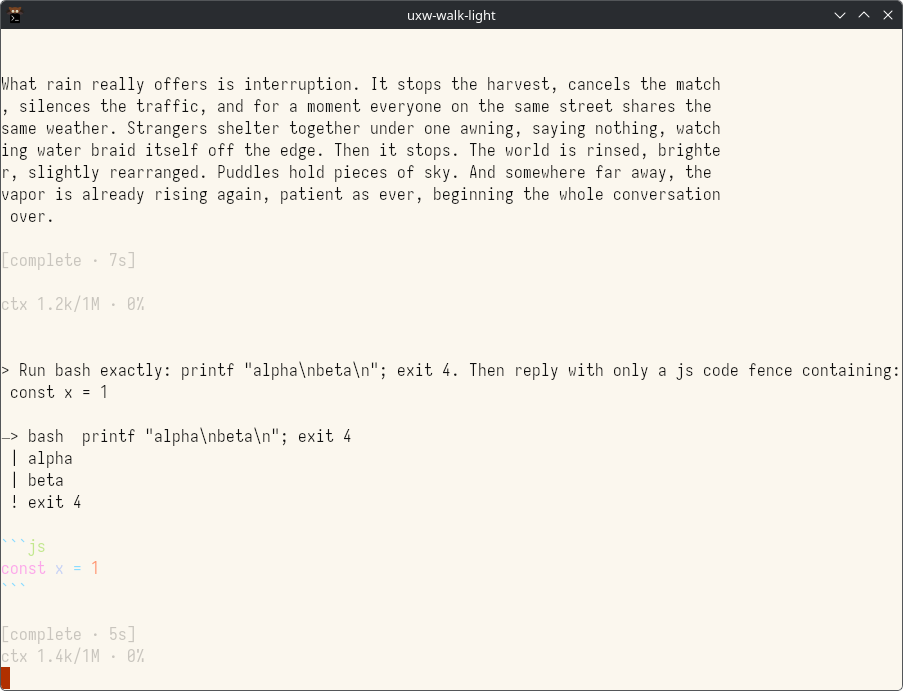</a>
      <figcaption>tool body + exit marker + js fence on <code>background #fbf7ee</code><br>
      <a href="captures/s10-light-tools-100x30-02.txt" target="_blank">captures/s10-light-tools-100x30-02.txt</a></figcaption></figure>
    <figure class="shot"><a href="shots/s10-light-markdown-100x30-03.png" target="_blank">
      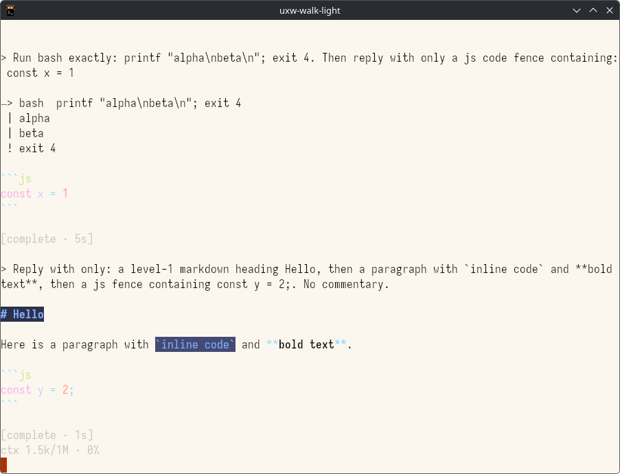</a>
      <figcaption>heading, inline code, bold, fence<br>
      <a href="captures/s10-light-markdown-100x30-03.txt" target="_blank">captures/s10-light-markdown-100x30-03.txt</a></figcaption></figure>
  </div>
  <div class="cols two align-start" style="margin-top:12px">
    <pre class="bad">what the eye gets on a light background:
  ctx 1.4k/1M · 0%        SGR 2 on default fg  -> nearly white on cream
  [complete · 5s]         SGR 2 on default fg  -> nearly invisible
   | alpha                the marker is SGR 2, the text is default fg
  ```js / const x = 1;     TokyoNight moon pastels on cream
  # Hello                 blue fg on a dark navy tint
   ! exit 4               no SGR at all -> the most readable row

the marks that carry colour are exactly the ones that do not follow
the terminal; the marks written with SGR 2 / default fg are exactly
the chrome rows. Hence: one theme, applied inconsistently (finding 5).</pre>
    <div>
      <p class="small">Nothing here is a request for a second theme — it is the same defect the report
      files as <b>finding 5</b>: chrome rows and terminal-state lines are handed to the terminal's
      defaults, while markdown/diff spans are painted from the hardcoded palette, so the two styles
      contradict each other on any background that is not the palette's own.</p>
      <p class="artifacts">
        <a href="captures/s10-light-idle-100x30-01.txt" target="_blank">idle on light</a> ·
        <a href="../ux-walk-20260924.md" target="_blank">report → finding 5</a>
      </p>
      <div class="note">Same palette, dark terminal: <a href="shots/s03-after-tool-100x30-10.png" target="_blank">tool body</a> ·
      <a href="shots/s05-md-100x30-01.png" target="_blank">markdown</a> — the rows that look "fine"
      there are the ones carried by the theme; the dim ones are carried by the terminal.</div>
    </div>
  </div>
</section>

<section class="slide" data-group="Findings" data-title="Findings index">
  <div class="kicker">findings — worst first</div>
  <h2>14 findings</h2>
  <table class="grid">
    <tr><th>#</th><th>finding</th><th>severity</th><th>kind</th></tr>
    <tr><td class="n">1</td><td>raw control bytes in tool output rewrite and erase committed scrollback</td><td><span class="tag major">major</span></td><td><span class="tag contract">contract</span></td></tr>
    <tr><td class="n">2</td><td><code>preparing</code> / <code>waiting for provider</code> never render; the provider wait is labelled "streaming"</td><td><span class="tag minor">minor</span></td><td><span class="tag contract">contract</span></td></tr>
    <tr><td class="n">3</td><td>every resize leaves a ghost status row and unpins the live region</td><td><span class="tag major">major</span></td><td><span class="tag contract">contract</span></td></tr>
    <tr><td class="n">4</td><td>Shift+Enter submits the draft instead of inserting a newline (through tmux)</td><td><span class="tag major">major</span></td><td><span class="tag contract">contract</span></td></tr>
    <tr><td class="n">5</td><td>the single dark theme is applied inconsistently: chrome rows use terminal defaults</td><td><span class="tag major">major</span></td><td><span class="tag contract">legibility</span></td></tr>
    <tr><td class="n">6</td><td>failure terminal states are unstyled while <code>[complete]</code> is dimmed</td><td><span class="tag minor">minor</span></td><td><span class="tag taste">taste</span></td></tr>
    <tr><td class="n">7</td><td>on a short pane a commit adds a second blank row between blocks</td><td><span class="tag minor">minor</span></td><td><span class="tag contract">contract</span></td></tr>
    <tr><td class="n">8</td><td>Esc is silent, and in a tool-less turn it is dropped</td><td><span class="tag minor">minor</span></td><td><span class="tag taste">taste</span></td></tr>
    <tr><td class="n">9</td><td>Ctrl+W at line start does nothing while Ctrl+Left crosses the join</td><td><span class="tag nit">nit</span></td><td><span class="tag taste">taste</span></td></tr>
    <tr><td class="n">10</td><td>caret on a full-width line sits on the last character</td><td><span class="tag nit">nit</span></td><td><span class="tag taste">taste</span></td></tr>
    <tr><td class="n">11</td><td>editor continuation rows carry no marker</td><td><span class="tag nit">nit</span></td><td><span class="tag taste">taste</span></td></tr>
    <tr><td class="n">12</td><td><code>/help</code> does not mention Tab completion</td><td><span class="tag nit">nit</span></td><td><span class="tag contract">contract</span></td></tr>
    <tr><td class="n">13</td><td>only JS/TS fences are highlighted</td><td><span class="tag nit">nit</span></td><td><span class="tag taste">taste</span></td></tr>
    <tr><td class="n">14</td><td>Ctrl+C on an idle draft discards it with no word</td><td><span class="tag nit">nit</span></td><td><span class="tag taste">taste</span></td></tr>
  </table>
  <p class="small" style="margin-top:12px">Keyboard: <code>←</code>/<code>→</code> move, <code>t</code> opens the contents,
  every slide is linkable as <code>#n</code>. Full write-up:
  <a href="../ux-walk-20260924.md" target="_blank">ux-walk-20260924.md</a>.</p>
</section>

<section class="slide" data-group="Findings" data-title="1 · tool output rewrites scrollback">
  <div class="kicker">finding 1 · severest</div>
  <h2>Tool output is written to the terminal unfiltered <span class="tag major">major</span> <span class="tag contract">breaks stated contract</span></h2>
  <div class="cols two">
    <figure class="shot"><a href="shots/s03-bash-cursorup-100x30-26.png" target="_blank">
      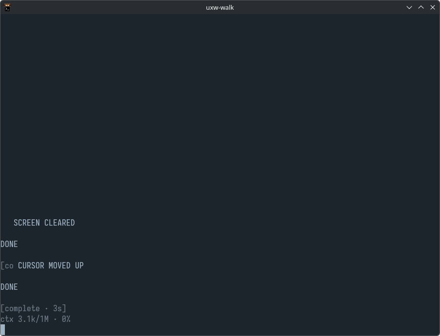</a>
      <figcaption>a turn's <code>[complete · 3s]</code> row, later rewritten by the next tool result</figcaption></figure>
    <figure class="shot"><a href="shots/s03-bash-clearscreen-after-100x30-25.png" target="_blank">
      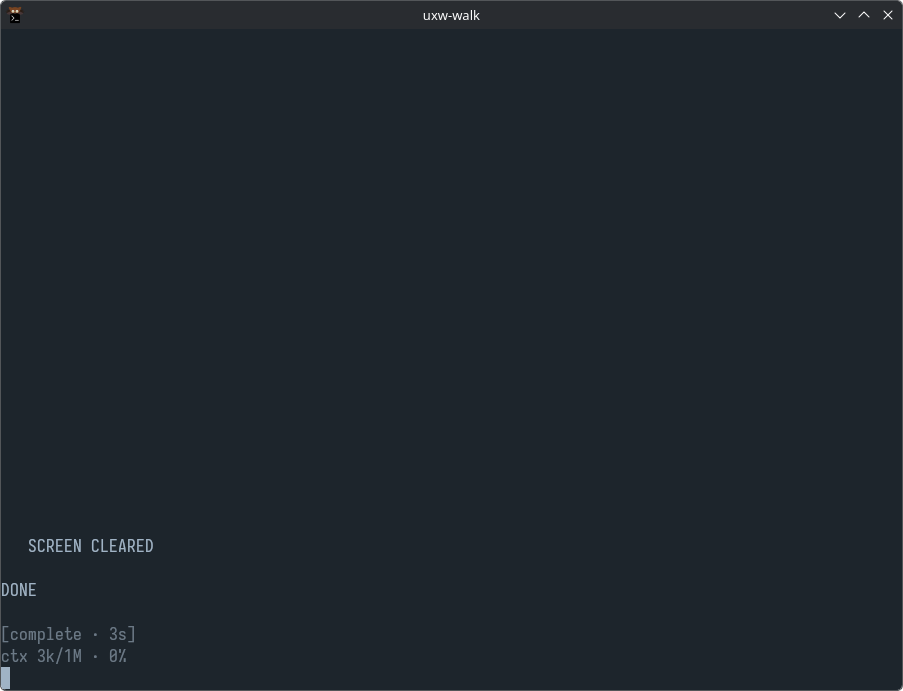</a>
      <figcaption>every earlier block erased; only the new tool line and the live region remain</figcaption></figure>
  </div>
  <div class="cols two align-start" style="margin-top:12px">
    <pre class="bad">$ printf '\033[5A CURSOR MOVED UP\n'          # one bash tool call
 | ... previous blocks ...
[co CURSOR MOVED UP                            <- was '[complete · 3s]'
DONE
[complete · 3s]

$ printf '\033[2J'; printf 'SCREEN CLEARED\n'
   SCREEN CLEARED                               <- and the screen above is gone

$ printf 'a\rb\n'                              # CR eats the body marker
 | col1    col2
overwrite                                      <- ' | cr' overwritten
 | RED plain</pre>
    <div>
      <dl class="kv">
        <dt>user was doing</dt><dd>letting the agent run ordinary commands — progress bars, <code>clear</code>, colourised tools, anything that redraws.</dd>
        <dt>keys / timing</dt><dd><code>Run bash exactly: printf '\033[5A CURSOR MOVED UP\n'</code>, <code>Enter</code>, wait for the result.</dd>
        <dt>appeared</dt><dd>the body row contains the raw <code>ESC[5A</code>, so the terminal moved the cursor up and wrote over a committed row.</dd>
        <dt>expected</dt><dd>a result can only add rows; control bytes that are not SGR must not reach the terminal.</dd>
        <dt>reproducer</dt><dd>one turn, <code>printf '\033[5A X\n'</code>, 100×30.</dd>
        <dt>contract</dt><dd>scrollback integrity ("nothing rewritten or lost") and the tool boundary in <code>AGENTS.md</code>.</dd>
        <dt>fix line</dt><dd>escape or drop non-SGR control bytes where the tool result enters the TUI.</dd>
      </dl>
      <p class="artifacts">
        <a href="captures/s03-bash-cursorup-100x30-26.txt" target="_blank">cursor-up capture (raw)</a> ·
        <a href="captures/s03-bash-clearscreen-after-100x30-25.txt" target="_blank">clear-screen capture</a> ·
        <a href="captures/s03-bash-hostile-100x30-23.txt" target="_blank">tab / CR / ANSI / bell</a>
      </p>
    </div>
  </div>
</section>

<section class="slide" data-group="Findings" data-title="2 · dead phase rows">
  <div class="kicker">finding 2</div>
  <h2>Two of five phase rows are unreachable <span class="tag minor">minor</span> <span class="tag contract">latent state</span></h2>
  <div class="cols two align-start">
    <div>
      <pre class="evidence">burst, 30 frames at 80 ms, first frame after Enter:

  1  ctx 404/1M · 0%                        <- Enter not handled yet
  2  ⠋ streaming · 0s · ctx 410/1M · 0%     <- ~70 ms after Enter
  3  ⠋ streaming · 0s
  4  ⠙ streaming · 0s        spinner every ~120 ms
  …
 25  ctx 677/1M · 0%                        <- [complete · 1s] already printed

no frame ever showed  preparing
no frame ever showed  waiting for provider</pre>
      <p class="small">In <code>src/agent.ts</code> the <code>waitingModel</code> phase is emitted when the
      stream object is constructed and <code>streaming</code> immediately after it — before the request is
      even sent. So the phase that exists to describe the first-byte wait is dead, and the row claims
      <code>streaming</code> for the whole provider wait.</p>
    </div>
    <div>
      <dl class="kv">
        <dt>user was doing</dt><dd>pressing Enter and looking for the first sign of life.</dd>
        <dt>appeared</dt><dd><code>streaming · 0s</code> with a spinner at 69 ms, elapsed ticking while nothing had arrived.</dd>
        <dt>expected</dt><dd>either a label that covers the wait, or no such label anywhere in the phase list.</dd>
        <dt>severity</dt><dd>minor — nothing is lost, the state is just unreachable and the label is wrong for the window it is shown in.</dd>
        <dt>reproducer</dt><dd>capture the pane every 80 ms from <code>Enter</code>; frame 1 is idle, frame 2 is <code>streaming</code>.</dd>
      </dl>
      <p class="artifacts"><a href="captures/s03-phases-100x30-01" target="_blank">captures/s03-phases-100x30-01</a> (30 frames)</p>
    </div>
  </div>
</section>

<section class="slide" data-group="Findings" data-title="3 · resize ghosts">
  <div class="kicker">finding 3</div>
  <h2>Every resize leaves a ghost status row <span class="tag major">major</span> <span class="tag contract">breaks stated contract</span></h2>
  <div class="cols two">
    <figure class="shot"><a href="shots/s12-resize-clean-after-02.png" target="_blank">
      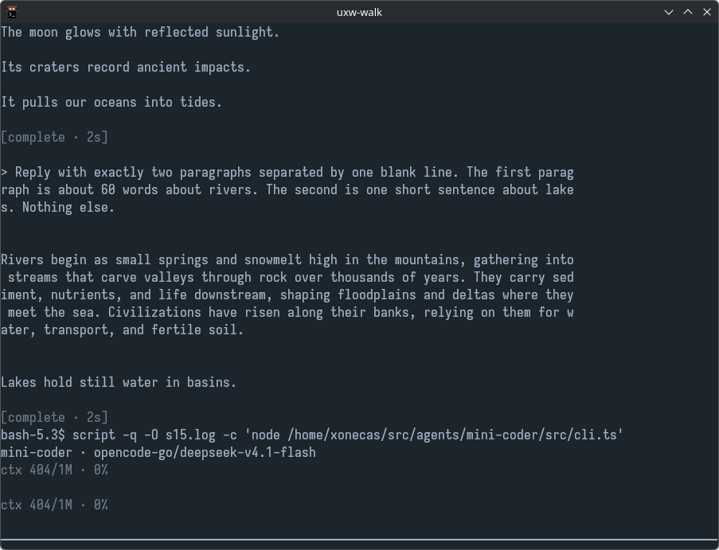</a>
      <figcaption>fresh app, one row smaller: a second status row appears in scrollback</figcaption></figure>
    <figure class="shot"><a href="shots/s06-resize-after-100x28-03.png" target="_blank">
      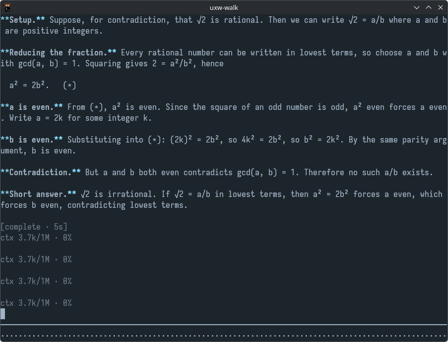</a>
      <figcaption>three resizes into a session: three stacked rows, each with a blank row under it</figcaption></figure>
  </div>
  <div class="cols two align-start" style="margin-top:12px">
    <pre class="bad">minimal reproducer

$ app at 100x30            -> status rows: ['ctx 404/1M · 0%']
$ tmux resize-window -y 29 -> status rows: ['ctx 404/1M · 0%', 'ctx 404/1M · 0%']
  tail:  'mini-coder · opencode-go/deepseek-v4.1-flash'
         'ctx 404/1M · 0%'          <- live
         ''
         'ctx 404/1M · 0%'          <- ghost
         ''
         ''

nine resizes in the geometry sweep -> nine stacked status rows
(shots/s06-fresh-idle-200x50.png)</pre>
    <div>
      <dl class="kv">
        <dt>user was doing</dt><dd>resizing the window, or letting the WM do it, with the app idle and with turns in flight.</dd>
        <dt>appeared</dt><dd>the previous live region is left where it was and the new one is drawn below it — one extra status row (plus its blank) per resize, forever in that session.</dd>
        <dt>expected</dt><dd>one status row, and after the pane grows the region back at the bottom, not mid-screen.</dd>
        <dt>why</dt><dd><code>handleResize()</code> drops the anchor (<code>live.reset()</code>), so the frame after the resize cannot erase what the previous frame drew; the tracked row count no longer describes the screen.</dd>
        <dt>contract</dt><dd>"no live region left behind" (AGENTS.md) plus "exactly one blank row between blocks".</dd>
        <dt>fix line</dt><dd>on resize, erase the region before dropping the anchor, or re-anchor it deterministically to the bottom.</dd>
      </dl>
      <p class="artifacts">
        <a href="captures/s12-resize-clean-before-01.txt" target="_blank">before (1 row)</a> ·
        <a href="captures/s12-resize-clean-after-02.txt" target="_blank">after (2 rows)</a> ·
        <a href="captures/s06-resize-after-100x28-03.txt" target="_blank">three rows</a> ·
        <a href="shots/s07-stream-done-100x30-04.png" target="_blank">region above the bottom after growing</a>
      </p>
    </div>
  </div>
</section>

<section class="slide" data-group="Findings" data-title="4 · Shift+Enter submits">
  <div class="kicker">finding 4</div>
  <h2>Shift+Enter submits the draft <span class="tag major">major</span> <span class="tag contract">documented binding</span></h2>
  <div class="cols two align-start">
    <figure class="shot"><a href="shots/s08-shiftenter-submits-15.png" target="_blank">
      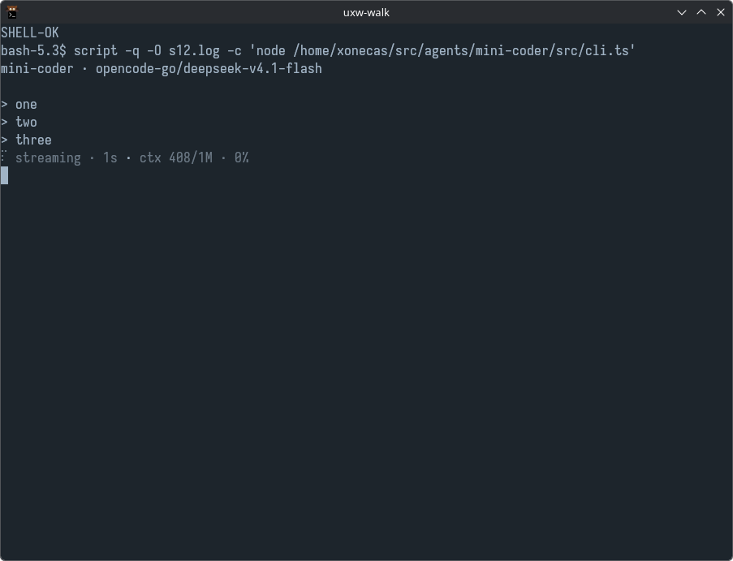</a>
      <figcaption>three lines typed with Ctrl+J, then Shift+Enter: the whole draft went to the model</figcaption></figure>
    <div>
      <pre class="bad">/help says:   Shift+Enter  newline (Ctrl+J also works)

what happened (extended-keys on, client xterm-kitty, extra
terminal-features *:extkeys on the client):
  > one
  > two
  > three
  The user's message is just "one two three". …   <- model answering
  ⠼ streaming · 1s · ctx 408/1M · 0%

byte probe in the same pane:
  extended-keys off  S-Enter -> "\r"
  extended-keys on   S-Enter -> "\r"
  Ctrl+J             -> "\n"
  injected \x1b[13;2u -> newline inserted (parser is fine)</pre>
      <dl class="kv">
        <dt>user was doing</dt><dd>adding a second line to a prompt, as documented.</dd>
        <dt>expected</dt><dd>a newline in the draft; anything else is a silent, irreversible submit.</dd>
        <dt>severity</dt><dd>major for anyone whose terminal stack does not deliver the kitty encoding — the failure mode is losing the draft to the model, not a cosmetic glitch.</dd>
        <dt>fix line</dt><dd>stop advertising Shift+Enter where the sequence cannot arrive, or state the terminal/tmux requirement next to it.</dd>
      </dl>
      <p class="artifacts">
        <a href="captures/s08-shiftenter-submits-15.txt" target="_blank">submit capture</a> ·
        <a href="captures/s08-ctrlj-newline-13.txt" target="_blank">Ctrl+J newline</a> ·
        <a href="captures/s08-csiu-shiftenter-14.txt" target="_blank">CSI-u fed as bytes</a> ·
        <a href="captures/s08-extkeys-off-bytes-11.txt" target="_blank">extended keys off</a> ·
        <a href="probe-keys.mjs" target="_blank">probe-keys.mjs</a>
      </p>
    </div>
  </div>
</section>

<section class="slide" data-group="Findings" data-title="5 · one theme, applied inconsistently">
  <div class="kicker">finding 5 · corrected framing</div>
  <h2>The dark theme is not applied consistently <span class="tag major">major</span> <span class="tag contract">legibility</span></h2>
  <p class="lead">There is one theme and it is dark. The defect is that only part of the UI is painted
  with it: markdown, fences and diffs get explicit TokyoNight <em>moon</em> colours, while the chrome —
  status row, <code> | </code> body markers, <code>&gt; </code> echo, <code>[complete · Ns]</code>,
  terminal-state lines — is written as default foreground and <code>SGR 2</code>, i.e. whatever the
  terminal's background happens to be.</p>
  <div class="cols three">
    <figure class="shot"><a href="shots/s10-light-tools-100x30-02.png" target="_blank">
      </a>
      <figcaption>light background: every <code>SGR 2</code> row is near-white on cream</figcaption></figure>
    <figure class="shot"><a href="shots/s10-light-markdown-100x30-03.png" target="_blank">
      </a>
      <figcaption>light background: the palette rows are pastel-on-cream, the heading tint stays dark navy</figcaption></figure>
    <figure class="shot"><a href="shots/s03-after-tool-100x30-10.png" target="_blank">
      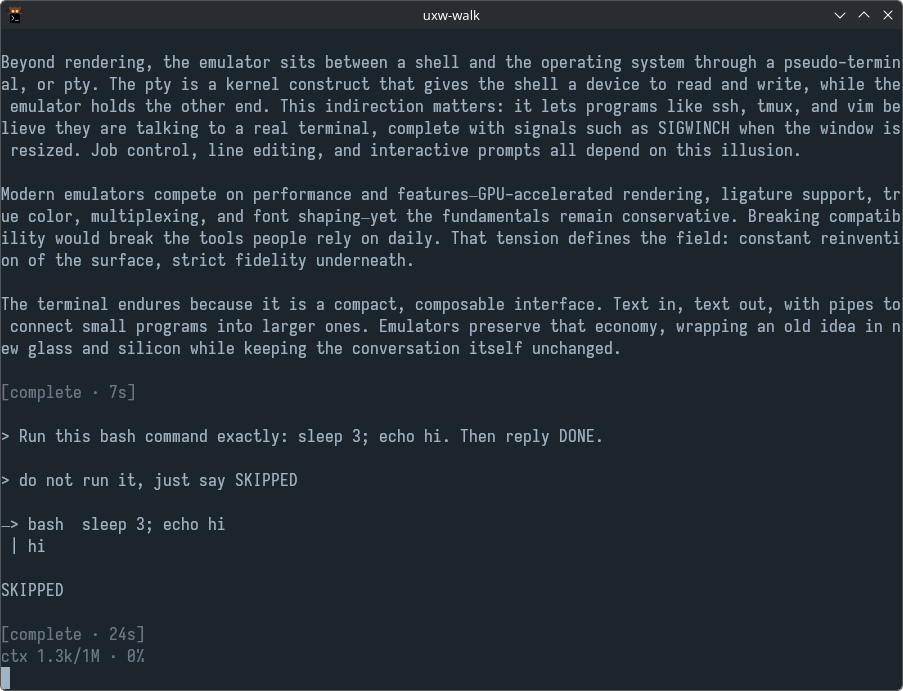</a>
      <figcaption>same rows on a dark terminal — the theme-coloured rows sit next to terminal-coloured ones</figcaption></figure>
  </div>
  <div class="cols two align-start" style="margin-top:12px">
    <pre class="bad">row                                        written as            follows
ctx 1.4k/1M · 0%         status row         SGR 2 + default fg    terminal
[complete · 5s]          terminal state     SGR 2 + default fg    terminal
 | alpha                 tool body marker   SGR 2 + default fg    terminal
> prompt                 user echo          default fg            terminal
! cancelled              terminal state     no SGR at all         terminal
@@ / + / - / context      diff rows          cyan / green / red   theme
# Hello / `code`         markdown           palette + bg tint     theme
js fence body            code               palette               theme

the contradiction is structural, not cosmetic: half the screen
descends from the palette and half from the terminal, so the two
halves can never agree on any background the palette does not own.</pre>
    <div>
      <dl class="kv">
        <dt>user was doing</dt><dd>reading the same states on a terminal whose background is not the theme's dark one.</dd>
        <dt>appeared</dt><dd>chrome rows effectively invisible, palette rows washed out or inverted; the only fully readable line was the error marker that carries no style at all.</dd>
        <dt>expected</dt><dd>one theme applied to every row it styles — chrome included — so the UI looks the same wherever it runs.</dd>
        <dt>severity</dt><dd>major: the context readout, the completion line and the block markers are the rows a user scans.</dd>
        <dt>note</dt><dd>this is not a request for a light theme; it is the inconsistency between the two style sources inside the single theme.</dd>
      </dl>
      <p class="artifacts">
        <a href="captures/s10-light-tools-100x30-02.txt" target="_blank">light tools</a> ·
        <a href="captures/s10-light-markdown-100x30-03.txt" target="_blank">light markdown</a> ·
        <a href="captures/s10-light-idle-100x30-01.txt" target="_blank">light idle</a> ·
        <a href="../ux-walk-20260924.md" target="_blank">report → finding 5</a>
      </p>
    </div>
  </div>
</section>

<section class="slide" data-group="Findings" data-title="6–8 · minors">
  <div class="kicker">findings 6–8</div>
  <h2>Minors</h2>
  <div class="cols two align-start">
    <div class="card">
      <h3>6 · failures are the quiet ones <span class="tag minor">minor</span> <span class="tag taste">taste</span></h3>
      <pre class="bad">184: ␛[2m[complete · 29s]␛[0m        <- success is dimmed
214:  ! exit aborted                <- no escape at all
216: ! cancelled                    <- no escape at all
220: -> bash  echo before; exit 3
222:  ! exit 3                      <- no escape at all</pre>
      <p class="small"><code>red()</code> and <code>yellow()</code> exist in <code>styles.ts</code> but
      terminal states use neither, so a cancelled or failed turn reads like ordinary text.</p>
      <p class="artifacts"><a href="captures/s03-cancel-mid-tool-100x30-21.txt" target="_blank">cancel capture (raw)</a> ·
      <a href="captures/s03-bash-exit3-100x30-22.txt" target="_blank">exit 3</a></p>
    </div>
    <div class="card">
      <h3>8 · Esc says nothing <span class="tag minor">minor</span> <span class="tag taste">taste</span></h3>
      <pre class="bad">t+1.5s  Esc   -> ⠼ streaming · 2s        (no acknowledgement)
t+2.0s        -> paused - type steering, Enter to submit
                 (only because a tool call provided a boundary)

tool-less turn, same Esc:
t+1.5s  Esc   -> ⠧ streaming · 2s
t+7.0s        -> [complete · 7s]          (the pause was dropped)</pre>
      <p class="small">The pause request is invisible until a step boundary that may never come; a tool-call
      turn that is paused mid-tool waits for the tool to finish first (observed: ~10 s).</p>
      <p class="artifacts"><a href="captures/s03-paused-streaming-100x30-03.txt" target="_blank">Esc while streaming</a> ·
      <a href="captures/s03-esc-in-runningtool-100x30-17.txt" target="_blank">Esc inside a tool</a> ·
      <a href="captures/s03-paused2-100x30-05.txt" target="_blank">tool-less turn</a></p>
    </div>
  </div>
  <div class="card" style="margin-top:14px">
    <h3>7 · two blank rows on a short pane <span class="tag minor">minor</span> <span class="tag contract">breaks stated contract</span></h3>
    <div class="cols two align-start">
      <pre class="bad">80x5, long streamed reply — the live region fills the pane:

153 |ate paragraphs with a blank line.
154 |
155 |
156 |Rivers begin as small springs and snowmelt high in the mountai
…
160 |ater, transport, and fertile soil.
161 |
162 |
163 |Lakes hold still water in basins.

byte log:  …receives.\r\n   (block separator blank)
                    \r\n   (re-anchor prefix)
                    \r\n   (live region)
→ the re-anchor newline lands after a separator blank that was
  already written, so the pair becomes a double blank.</pre>
      <pre class="evidence">same reply shape, 80x5, short preview — the region does not
fill the pane, so no re-anchor happens:

143 |The moon glows with reflected sunlight.
144 |
145 |Its craters record ancient impacts.
146 |
147 |It pulls our oceans into tides.

→ single blanks, exactly as the invariant promises. The defect
  only appears once the region occupies every row above the last.

artifacts
  captures/s11-80x5-doubleblank-04.txt   the double blank
  captures/s11-80x5-blankrows-03.txt     the clean control
  captures/s11-blankline-100x30-01.txt   100x30 control
  check-integrity.py                     the checker used</pre>
    </div>
  </div>
</section>

<section class="slide" data-group="Findings" data-title="9–14 · nits">
  <div class="kicker">findings 9–14</div>
  <h2>Nits</h2>
  <div class="cols two align-start">
    <div class="card">
      <h3>9 · Ctrl+W at line start <span class="tag nit">nit</span></h3>
      <pre class="evidence">caret (0,27) = line 2, column 0
  Ctrl+W    -> (0,27)   no-op
  Alt+B     -> (0,27)   no-op
  Ctrl+Left -> (18,26)  crosses into the previous line's last word</pre>
      <p class="small">Two word-back operations disagree about whether a line join is a boundary.</p>
      <p class="artifacts"><a href="captures/s02-ctrlw-linestart-100x30-16.txt" target="_blank">Ctrl+W</a> ·
      <a href="captures/s02-wordmotions-100x30-17.txt" target="_blank">motions</a></p>
    </div>
    <div class="card">
      <h3>10 · caret on a full-width line <span class="tag nit">nit</span></h3>
      <pre class="evidence">10 chars   -> x=10
100 chars  -> x=99   caret rests on the last character
103 chars  -> x=3
500 chars  -> x=99   (5th row, again on the last cell)</pre>
      <p class="small">Vim does the same, so taste only — the wrap boundary is otherwise exact.</p>
      <p class="artifacts"><a href="captures/s02-calib2-100x30-09.txt" target="_blank">100/103</a> ·
      <a href="captures/s02-burst500-100x30-11.txt" target="_blank">500</a></p>
    </div>
    <div class="card">
      <h3>11 · no continuation marker in the editor <span class="tag nit">nit</span></h3>
      <figure class="shot" style="margin-top:6px"><a href="shots/s02-3lines-100x30-14.png" target="_blank">
        </a>
        <figcaption>row 2 is a wrap of row 1, row 3 is a real newline — only counting rows tells them apart</figcaption></figure>
      <p class="artifacts"><a href="captures/s02-3lines-100x30-14.txt" target="_blank">capture</a></p>
    </div>
    <div class="card">
      <h3>12 · Tab completion is undocumented <span class="tag nit">nit</span></h3>
      <p class="small"><code>/</code> + Tab and <code>/h</code> + Tab both complete to <code>/help</code>;
      the help list shows five keybindings and not this one, and a bare <code>/</code> gives no hint that
      a command namespace exists.</p>
      <p class="artifacts"><a href="captures/s02-help-100x30-26.txt" target="_blank">/help</a> ·
      <a href="captures/s02-slash-tab-100x30-24.txt" target="_blank">"/" + Tab</a> ·
      <a href="captures/s02-slashh-tab-100x30-25.txt" target="_blank">"/h" + Tab</a></p>
    </div>
    <div class="card">
      <h3>13 · only JS/TS fences are highlighted <span class="tag nit">nit</span></h3>
      <pre class="evidence">```js      -> 'js' coloured, body coloured   (const x = 1;)
```python  -> 'python' coloured, body plain
```       -> marker plain, body plain</pre>
      <p class="small">A supported-language list that is not stated anywhere; a python fence looks
      half-styled rather than deliberately plain.</p>
      <p class="artifacts"><a href="captures/s05-unclosed-fence-100x30-02.txt" target="_blank">python fence</a> ·
      <a href="captures/s05-md-100x30-01.txt" target="_blank">js fence</a></p>
    </div>
    <div class="card">
      <h3>14 · Ctrl+C eats an idle draft <span class="tag nit">nit</span></h3>
      <p class="small">With one line typed and no turn running, <code>Ctrl+C</code> removes the draft and
      says nothing: status row unchanged, no message, no undo. The help text binds Ctrl+C to "cancel the
      turn", which at idle is a different action than the one performed.</p>
      <p class="artifacts"><a href="captures/s08-idle-ctrlc-clears-02.txt" target="_blank">capture</a> ·
      <a href="shots/s08-idle-ctrlc-clears-02.png" target="_blank">image</a></p>
    </div>
  </div>
</section>


<section class="slide" data-group="Wrap-up" data-title="Not covered">
  <div class="kicker">wrap-up</div>
  <h2>What the walk could not reach</h2>
  <div class="cols two align-start">
    <div class="card">
      <h3>states that need a different configuration or a broken provider</h3>
      <ul class="tight small">
        <li><b><code>! &lt;provider error&gt;</code></b> — the configured provider answered on every turn; forcing
        an error means breaking auth or the network, which the walk does not do. Reported as not covered
        rather than faked.</li>
        <li><b><code>read</code> on a model without image input</b> — the branch that returns
        <code>read failed: … does not accept image input</code> needs a text-only <code>provider</code>/<code>model</code>,
        i.e. a config change; the image-capable path was captured instead.</li>
        <li><b>the model-facing <code>... output truncated ...</code> marker</b> from <code>tools/bash.ts</code> —
        it lands inside the elided middle of the body, so it never reaches the screen; only the display
        marker <code>... N lines not shown ...</code> is reachable.</li>
        <li><b><code>preparing</code> / <code>waiting for provider</code></b> — not a coverage gap in the harness:
        the rows cannot be rendered at all (finding 2).</li>
      </ul>
    </div>
    <div class="card">
      <h3>one unreproduced observation</h3>
      <p class="small">Immediately after one launch, two characters sent within the first moments were
      lost — plausibly the window before the app puts the tty in raw mode. A 500-character burst sent
      after the banner rendered lost nothing, so it is recorded as an observation, not a finding.</p>
      <h3>how the copy path was checked</h3>
      <p class="small">A selection made in tmux copy-mode (<code>begin-selection</code> …
      <code>copy-selection-and-cancel</code>) and read back with <code>show-buffer</code> yields plain
      text with no escape noise; an elision marker in the selection appears as the literal row
      <code>... N lines not shown ...</code>, which is how the display marker stays distinguishable from
      file content.</p>
      <p class="artifacts"><a href="../ux-walk-20260924.md" target="_blank">report → Not covered</a></p>
    </div>
  </div>
  <div class="callout" style="margin-top:14px">Everything above is observation: no source file was changed
  during the walk, no test was added, no dependency installed, and the fixes named in the report are one
  line each, not proposals.</div>
</section>

<section class="slide" data-group="Wrap-up" data-title="Reproduce &amp; state of the tree">
  <div class="kicker">wrap-up</div>
  <h2>Reproducing any cell, and what was left behind</h2>
  <div class="cols two align-start">
    <div>
      <h3>the shell the walk ran on</h3>
      <pre class="evidence">RUN=$PWD/ux-walk-20260924
tmux -f /dev/null new-session -d -s uxw -x 100 -y 30 -c "$RUN" 'bash --norc --noprofile'
tmux set -g window-size manual; tmux set -g status off
tmux set -g extended-keys on
tmux resize-window -t uxw -x 100 -y 30
setsid kitty --detach -o remember_window_size=no \
  -o initial_window_width=100c -o initial_window_height=30c tmux attach -t uxw
# inside the pane, cwd = $RUN:
script -q -O s01.log -c 'node /home/xonecas/src/agents/mini-coder/src/cli.ts'</pre>
      <p class="small">Then drive with <code>send-keys -l</code> for text and named keys otherwise,
      capture with <code>tmux capture-pane -p -e -S -</code>, and grab with
      <code>spectacle -a -b -n -o shots/&lt;state&gt;-&lt;w&gt;x&lt;h&gt;.png</code>. The helper used for every
      capture in this deck is <a href="harness.sh" target="_blank">harness.sh</a>;
      <a href="check-integrity.py" target="_blank">check-integrity.py</a> is the blank-row checker and
      <a href="probe-keys.mjs" target="_blank">probe-keys.mjs</a> the keyboard byte probe.</p>
    </div>
    <div>
      <h3>state of the tree afterwards</h3>
      <ul class="tight small">
        <li><code>git status --short</code> → <code>?? ux-walk-20260924/</code>,
        <code>?? ux-walk-20260924.md</code>, <code>?? ux-walk.md</code> (pre-existing). No tracked file touched.</li>
        <li>Repo <code>sessions/</code> unchanged — its six <code>20260924-*</code> dirs were all created
        15:35–17:31, before this walk started at 17:32; none came from this walk.</li>
        <li>All 13 walk sessions landed in <code>ux-walk-20260924/sessions/</code>;
        <code>~/.config/mini-coder/sessions</code> untouched.</li>
        <li>No config change, no CLI flags, no environment change; the tmux server and the kitty window
        used for captures were torn down and no app or tool process was left running.</li>
      </ul>
      <h3>where to read the long form</h3>
      <p class="artifacts">
        <a href="../ux-walk-20260924.md" target="_blank">ux-walk-20260924.md</a> — coverage grid per geometry,
        then the 14 findings worst first, each with keys/timing, what appeared, what should have appeared,
        the image, the capture, the smallest reproducer, a severity and whether it breaks a stated contract.<br>
        <a href="captures/" target="_blank">captures/</a> ·
        <a href="shots/" target="_blank">shots/</a> ·
        <a href="sessions/" target="_blank">sessions/</a> ·
        <a href="." target="_blank">s01…s16.log</a>
      </p>
    </div>
  </div>
</section>

</main>

<footer id="foot">
  <span>ux-walk-20260924/</span>
  <span>report: ux-walk-20260924.md</span>
  <span class="spacer" style="flex:1"></span>
  <span id="footpos"></span>
</footer>
<script>
(function () {
  const slides = [...document.querySelectorAll('section.slide')];
  const toc = document.getElementById('toc');
  const counter = document.getElementById('counter');
  let i = 0, group = '';

  slides.forEach((s, k) => {
    if (s.dataset.group !== group) {
      group = s.dataset.group;
      const h = document.createElement('h4');
      h.textContent = group;
      toc.appendChild(h);
    }
    const a = document.createElement('a');
    a.href = '#' + (k + 1);
    a.innerHTML = '<span class="n">' + (k + 1) + '</span>' + s.dataset.title;
    toc.appendChild(a);
  });
  const links = [...toc.querySelectorAll('a')];

  function show(n, push) {
    i = Math.min(slides.length - 1, Math.max(0, n));
    slides.forEach((s, k) => s.classList.toggle('active', k === i));
    links.forEach((a, k) => a.classList.toggle('here', k === i));
    counter.textContent = (i + 1) + ' / ' + slides.length;
    document.getElementById('footpos').textContent = 'slide ' + (i + 1) + ' / ' + slides.length;
    slides[i].scrollTop = 0;
    if (push !== false) history.replaceState(null, '', '#' + (i + 1));
  }

  document.getElementById('next').onclick = () => show(i + 1);
  document.getElementById('prev').onclick = () => show(i - 1);
  document.getElementById('tocbtn').onclick = (e) => { e.stopPropagation(); toc.classList.toggle('open'); };
  toc.onclick = () => toc.classList.remove('open');

  addEventListener('keydown', (e) => {
    if (e.key === 'ArrowRight' || e.key === 'PageDown' || e.key === ' ' || e.key === 'j') { e.preventDefault(); show(i + 1); }
    else if (e.key === 'ArrowLeft' || e.key === 'PageUp' || e.key === 'k') { e.preventDefault(); show(i - 1); }
    else if (e.key === 'Home') show(0);
    else if (e.key === 'End') show(slides.length - 1);
    else if (e.key === 't') toc.classList.toggle('open');
    else if (e.key === 'Escape') toc.classList.remove('open');
  });
  addEventListener('hashchange', () => show((parseInt(location.hash.slice(1), 10) || 1) - 1, false));

  show((parseInt(location.hash.slice(1), 10) || 1) - 1, false);
})();
</script>
</body>
</html>
